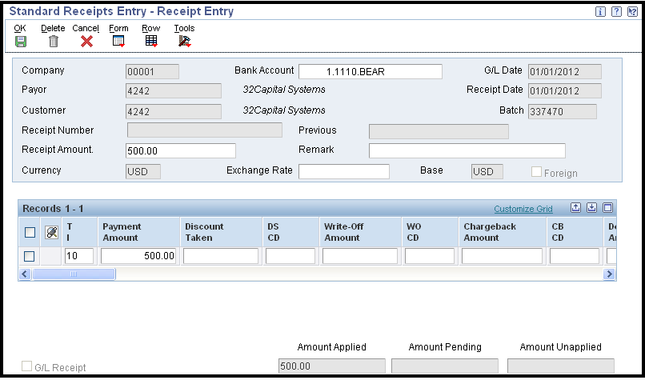
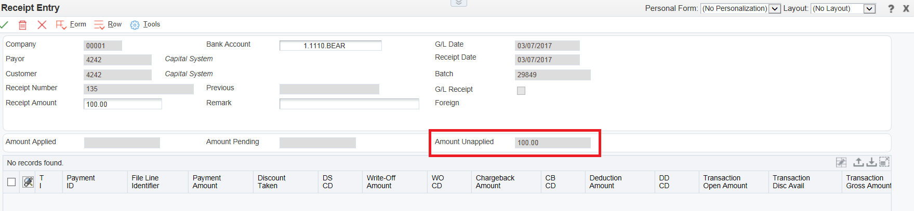
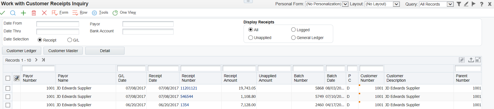
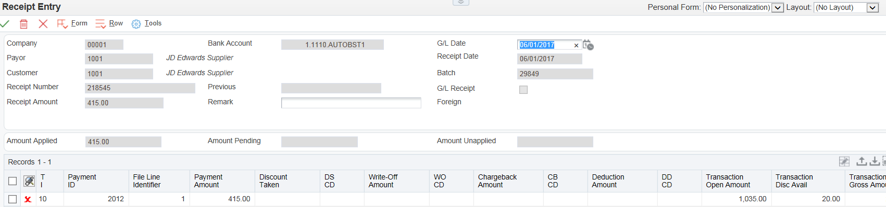
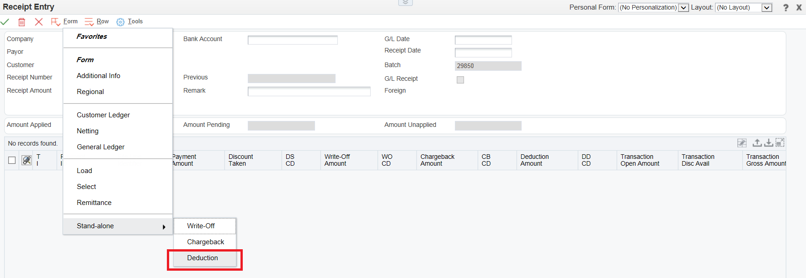
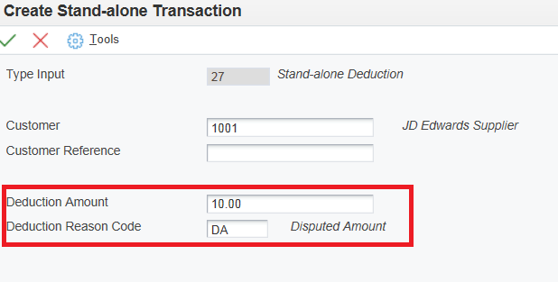

Manual receipts can be used to register cash received into the Accounts Receivable system quickly, if a receipt is urgent and cannot wait for the next automatic receipts cycle for example.
Receipts are entered in batches, just as invoices are entered in batches. The system assigns the batch type RB to all records that are generated by the manual receipts applications. When you apply a receipt to invoices, the system creates one document to represent the receipt, which is stored in the Receipts Header table (F03B13), and one document for each invoice to which you apply the receipt, which is stored in the Receipts Detail table (F03B14). As with other Accounts Receivable processes in EnterpriseOne, receipt entry consists of three main stages: Enter, Review, and Post.
Understanding Receipt Entry Methods
Depending on the type of receipt, you can use either the Standard Receipts Entry (P03B102) or Speed Receipts Entry (P03B0001) program to enter receipts. Unapplied or general ledger receipts can be entered using either program. To help determine which method is used, consider the advantages and limitations of standard and speed receipts entry:
Standard Receipts Entry (P03B102)
When using standard receipts entry you can:
Use either the Load or Select feature to display open items for a customer.
Enter information directly from a customer’s remittance slip.
Apply receipts to invoices that include discounts or write-offs.
Create chargebacks for discount amounts or short payments.
Create deductions for short payments.
Create stand-alone chargebacks, write-offs, and deductions.
Apply unapplied amounts to invoices.
Apply receipts that are logged through Speed Receipts Entry.
View the results of receipts entry.
Locate and revise receipts.
Delete unposted receipts and receipt pay items.
Void posted receipts and receipt pay items.
Designate receipts as insufficient funds (NSF).
Apply receipts in an alternate currency.
When using standard receipts entry you cannot:
Enter receipts as quickly as you can using Speed Receipts Entry because you use multiple forms to access open items and enter receipt information.
Enter logged receipts.
Apply receipts using a balance-forward method.
Speed Receipts Entry (P03B0001)
When using speed receipts entry you can:
Use one form to enter multiple receipts.
Enter logged receipts.
Enter balance-forward receipts.
Create automatic write-offs.
When using speed receipts entry you cannot:
Create chargebacks, manual write-offs, or deductions.
Pre-load open items.
Use this program as a stand-alone system.
Locate or revise receipts.
Delete or void receipts.
Designate receipts as NSF.
View the results of receipts applications
Receipt Document Types
The main document types generated by the receipt applications are:
Document Type
Description
Use
RC
Receipt
The system assigns this document type when a receipt is entered.
RO
Void Receipt
The system assigns this document type when a receipt is voided.
RS
Spread Receipt
The system assigns this document type when a credit memo is applied to an invoice on a zero amount receipt. This document type is not assigned when applying an unapplied receipt to an invoice.
RV
Insufficient Funds Receipt
The system assigns this document type when a customer has insufficient funds in the bank to pay the payment.
RU
Unapplied Receipt
The system assigns this document type to a receipt that is not applied to a specific invoice.
RL
Logged Receipt
The system assigns this document type to a receipt that is not associated with a customer or payor.
RR
Rounding Record
The system assigns this document type when a foreign currency receipt is either fully applied on the foreign side, but not fully applied, or fully unapplied on the foreign side but not fully unassigned on the domestic side on the domestic side due to rounding issues. This rounding record is at the receipt level and is not associated with any particular invoice pay item.
Note - Document types (RU. R5, RS, etc) generated by the AR receipt entry P03B102 are hard coded in the program and it cannot be changed.
Standard/Manual Receipts
Overview
Using Standard Receipts Entry (P03B102), you can select invoices paid by the receipt and determine how to handle short payments or unearned discounts to the invoices that are specified on the receipt. This is the most common method of applying receipts and provides the most flexibility for receipt application.
Type input (TI) codes are used to specify how the system will apply payment amounts. Based on the payment amount entered and the type input code used, the system can calculate write-off, chargeback, and deduction amounts, as well as determine whether discounts that are available are earned. Invoices can also be overpaid to generate a credit to the customer’s account.
Note - Once the receipt is saved it is not possible to change the receipt number.
Type Input (IT) Codes
When receipts are applied to invoices, a type input (TI) code is used to automatically calculate amounts to apply for payments, discounts, write-offs, chargebacks, and deductions.
This table lists the types of input codes for standard receipts entry and how they can be used to automatically calculate any necessary amounts. The same TI codes can also be used for Draft Entry in Enter Our Drafts/Enter Customer Drafts (P03B602).
Type Input Code
Description
Use
10
Simple Invoice Match
Payment amount = current open amount minus discount available
Discount taken = discount available
Write-off = optional
Chargeback = optional
Deduction = optional
This code simply applies the receipt amount against the selected invoice(s) and includes any available discount. A write off, chargeback or deduction amount can then be added manually as required
11
Invoice Match with Automatic Chargeback for Discount Amount
Payment amount = current open amount minus discount available
Discount taken = optional
Write-off = optional
Chargeback = discount available
Deduction = optional
This code applies the receipt amount against the selected invoice(s). If the discount period has passed and the receipt includes discount, a chargeback is automatically created for the discount amount. A write off, further chargeback or deduction can then be added manually as required
15
Invoice Match with Write-Off
Amount applied = current amount minus discount available
Discount taken = discount available
Write-off = current open amount − amount applied, discount taken, chargeback amount, and deduction amount
Chargeback = optional
Deduction = optional
This code can be used in an underpayment situation. Instead of creating a chargeback for the underpaid amount, it is automatically written off after taking into account any available discount. A chargeback or deduction can be added manually as required.
16
Invoice Match with Chargeback
Amount applied = current open amount minus discount available
Discount taken = discount available
Write-off = optional
Chargeback = current open amount − amount applied, discount taken, write-off, and deduction amount
Deduction = optional
This code can be used in an underpayment situation. Instead of writing off the underpaid amount, a chargeback is automatically created after taking into account any available discounts. A write off or deduction can be added manually as required.
17
Invoice Match with Deduction
Amount applied = current open amount minus discount available
Discount taken = discount available
Write-off = optional
Chargeback = optional
Deduction = current open amount − amount applied, discount taken, write-off, and chargeback
This code can be used in an underpayment situation. A deduction is created for the outstanding amount, after taking into account any available discounts. The deduction can then be researched and processed at a later time.
A receipt can be entered using a single type input code or multiple codes if for example discount is required on one invoice, a deduction on another, a write off on a further invoice. Each invoice can be addressed individually by using the type input codes in any combination.
Standard Receipt Processing Options
Processing options specify the default processing for the application
Display Tab - These processing options enable the retention of values that were previously entered on the Receipts Entry form. When entering similar types of receipts, completing these processing options can reduce entry time.
Company - Specify whether to retain the company number entered on the receipt entry form after you enter a receipt. Values are:
Blank: Do not retain the company number.
1: Retain the company number.
Bank Account - Specify whether to retain the bank account number entered on the Receipt Entry form after you enter the receipt. Values are:
Blank: Do not retain the bank account.
1: Retain the bank account
G/L Date - Specify whether to retain the G/L date entered on the Receipt Entry form after you enter the receipt. Values are:
Blank: Do not retain the G/L date.
1: Retain the G/L date.
Receipt Date - Specify whether to retain the receipt date entered on the Receipt Entry form after you enter the receipt. Values are:
Blank: Do not retain the receipt date.
1: Retain the receipt date.
Payor Number - Specify whether to retain the payor number entered on the Receipt Entry form after you enter the receipt. Values are:
Blank: Do not retain the payor number.
1: Retain the payor number.
Customer Number - Specify whether to retain the customer number entered on the Receipt Entry form after you enter the receipt. Values are:
Blank: Do not retain the customer number.
1: Retain the customer number.
Remark - Specify whether to retain the remark entered on the Receipt Entry form after you enter the receipt. Values are:
Blank: Do not retain the remark.
1: Retain the remark.
Currency - Use this processing option to retain the currency code entered on the Receipt Entry form after you enter the receipt. Values are:
Blank: Do not the retain the currency.
1: Retain the currency.
Exchange Rate - Specify whether to retain the exchange rate entered on the Receipt Entry form after you enter the receipt. Values are:
Blank: Do not retain the exchange rate.
1: Retain the exchange rate.
Payment Instrument - Specify whether to retain the payment instrument on the Receipt Entry form after you enter the receipt. Values are:
Blank: Do not retain the payment instrument.
1: Retain the payment instrument.
Cleared/Value Date - Specify whether to retain the cleared/value date on the Receipt Entry form after you enter the receipt. Values are:
Blank: Do not retain the cleared/value date.
1: Retain the cleared/value date.
Defaults Tab - These processing options enable you to specify default values to use on the Work with Customer Receipts Inquiry, Receipt Entry, Additional Information, Load Invoices, and Select Invoices forms. When entering the receipt, you can override any of the values that you enter in these processing options.
Display Receipt Type - Specify the type of receipts to display on the Work with Customer Receipts Inquiry form. Values are:
1: All
2: Unapplied
3: Logged
4:General Ledger
Date Type - Specify the date type to use with the Date Selection From and Thru fields. Values are:
1: Receipt date
2: G/L date
Type Input Code - Specify the default type input code for applying receipts to invoices. Values are:
Blank: The system does not use a default value.
10: Simple invoice match.
11: Match auto chargeback discount.
15: Match with write-off.
16: Match with chargeback.
17: Match with deduction.
Remark - Specify the default remark to use for receipt detail records. Values are:
Blank: Use the invoice remark.
1: Use the receipt header remark.
Receipt Numbering - Specify whether to have Next Numbers assign the receipt number. Values are:
Blank: Do not use Next Numbers.
1: Use Next Numbers
Deduction Reason Code - Specify the default deduction reason code for entering a deduction amount. If you leave this field blank, the deduction reason code must be entered manually in the detail area on the Receipt Entry form. Valid deduction reason codes are defined in User Defined Code (UDC) 03B/CR.
Override Company Number - Specify the default company number to use on the Load, Select, and Remittance forms. Values are:
Blank: Use the company number from Receipt Entry.
1:Use '*' for all companies.
Default G/L Offset for Unapplied Receipts - Specify whether to use the value in the G/L Offset field of the Customer Master (F03012) as the default value for the Unapplied G/L Offset field when you enter unapplied receipts. The system locates the A/R trade account based on the G/L offset that you use. Values are:
Blank: Do not use values from the customer record. The system uses the default value UC.
1: Use the G/L offset from the customer record. If the customer record does not have a G/L offset defined, the system uses the default G/L offset (UC) for unapplied receipts.
Edits Tab - These processing options enable you to perform specific functions, such as writing off amounts or designating receipts as having insufficient funds, as well as to specify whether you want the system to notify you of certain conditions, such as using a duplicate receipt number or entering an overpayment.
Receipt Number - Specify whether the system requires a receipt number when you enter a receipt. Values are:
Blank: Do not require receipt number.
1: Require receipt number.
Write-Offs - Specify whether to allow write-offs on receipts. Values are:
Blank: Allow write-offs.
1: Do not allow write-offs.
Delete/NSF Unposted Receipts.Specify whether to allow the delete and NSF operations on unposted receipts.Values are:
Blank: Allow delete and NSF.
1: Do not allow delete and NSF.
Overpayment Edit - Specify the severity of the error message issued when an invoice has been overpaid. When you overpay an invoice the system displays it as a negative open amount. Values are:
0: No Edit
1: Warning
2: Error.
Duplicate Receipt Edit - Specify the severity of the message issued when a duplicate receipt number is detected in the system. The system searches for duplicate receipt numbers for all records in the Receipts Header (F03B13), not for individual customers. Values are:
0: No Edit
1: Warning
2: Error
Process Tab - These processing options enable you to control how the system applies receipts to invoices when you use a default type input code. They also control whether the system creates a summarized record in the Account Ledger (F0911) for each batch of receipts that you enter or a detail record for each receipt.
Apply Invoices - Specify how to apply receipts to invoices that appear in the detail area when you specify a default type input code to use. If you leave the Type Input Code processing option on the Defaults tab blank, the system ignores this processing option. Values are:
Blank: Apply invoices up to the receipt amount.
1: Apply all invoices.
Journal Entry Creation Method - Specify whether the post program creates one summarized journal entry for the batch of receipts entered, or one journal entry for each receipt. The system assigns the value that you enter in this processing option to the A/R Post field (ISTR) in the F03B13 table. The post program uses this value to create the journal entry records. Values are:
Blank: Summarized journal entries. The system creates one journal entry with the document type RK for each batch of receipts that you post.
1: Detail journal entries. The system creates one journal entry with the document type RC for each receipt in the batch.
NOTE: Regardless of the setting of this processing option, the system does not post receipts when the offset method in the A/R constants is set to 'B'and the Intercompany Settlement option in the G/L constants is set to '3'.
Display Invoices - Specify whether to display only invoices with an approved pay status. Values are:
Blank: Display all invoices.
1: Display only approved invoices.
Negative Receipts - (Available as of 8.10) Specify whether to allow negative receipts in the Standard Receipts Entry program (P03B102). A negative receipt can be either a negative payment amount with a fully applied receipt, or a fully applied receipt with a negative general ledger entry. Values are:
Blank: Do not allow negative receipts.
1: Allow negative receipts.
Netting Program Version - Specify the version of the Netting program to use. If you leave this processing option blank, the system uses version ZJDE0002.
Currency Tab - These processing options specify whether you want the system to validate whether the exchange rate is effective, and whether to enable alternate currency receipts to be entered
Edit Effective Date - Specify whether the system validates the effective date that it uses to retrieve the exchange rate against the G/L date that you enter on the receipt. Values are:
Blank: Do not validate the effective date.
1: Validate the effective date. The system issues a warning when the effective date of the exchange rate retrieved from the Currency Exchange Rates table (F0015) is not in the same period as the G/L date of the receipt.
Alternate Currency Receipts - Specify whether to allow the payment of an invoice in an alternate currency (a currency other than the base or transaction currency of the invoice). Values are:
Blank: Do not allow payment in alternate currency.
1: Allow payment in alternate currency.
Chargeback Tab - These processing options specify values that you want the system to assign to chargeback records that it creates.
Pay Status - Specify the default pay status to assign to chargebacks. If you leave this processing option blank, the system uses the value that is set up in the Data Dictionary for item PST. Valid values are defined in UDC 00/PS (Pay Status).
Date Option - Specify the invoice date and net due date to assign to chargebacks. Values are:
Blank: Use the receipt G/L date.
1: Use the corresponding dates from the invoice.
Reason Code - Specify the default reason code to assign when you enter a chargeback amount. If you leave this processing option blank, you must enter the chargeback reason code manually. Valid chargeback reason codes are defined in UDC 03B/CB.
Auto Write Off Tab - These processing options activate the automatic write-off feature and enable you to establish write-off limits for both under- and overpayments. You must designate the write-off reason code for the system to use when activating the automatic write-off feature.
Maximum Underpayment Amount - Specify the limit to use to write off underpayments.
Underpayment Reason Code - Use this processing option to enable automatic write-off processing and to specify the default reason code to assign when the system automatically writes off an underpayment. Valid write-off reason codes are defined in UDC 03B/RC. You must also set up a corresponding AAI item (RA xx, where xx is the reason code) for the write-off reason code that you specify.
Maximum Overpayment Amount - Specify the maximum amount for which the system writes off overpayments. Enter the value as a negative amount.
Overpayment Reason Code - Use this processing option to enable automatic write-off processing and to specify the default reason code for the system to assign when it automatically writes off an overpayment. Valid write-off reason codes are defined in UDC 03B/RC. You must also set up a corresponding AAI item (RAxx, where xx is the reason code) for the write-off reason code that you specify.
Manual Write Off Tab - These processing options establish write-off limits for both under- and overpayments, and to set up a default for the system to use for the write-off reason code.
Maximum Underpayment Amount - Specify the maximum amount for which you can write off an underpayment.
Maximum Overpayment Amount - Specify the maximum amount for which you can write off an overpayment. Enter the value as a negative amount.
Write-Off Reason Code - Specify the default reason code to assign when you enter a write-off amount. Valid write-off reason codes are defined in UDC 03B/RC. You must also set up a corresponding AAI item (RAxx, where xx is the reason code) for each write-off reason code that you specify.
Discount Tab - These processing options set up rules for processing discounts.
Discount Available - Specify whether to enable the discount taken to be greater than the discount available. Values are:
Blank: Do not allow discounts taken to be greater than the discount available.
1: Allow discounts taken to be greater than the available discount.
Discount Applied - Specify whether to allow the discount taken to be greater than the payment amount. Values are:
Blank: Do not allow the discount taken to be greater than the payment amount.
1: Allow the discount taken to be greater than the payment amount.
Grace Period Days - Specify the number of days to add to the discount due date to extend the period during which the discount can be taken. The system uses this processing option only when it calculates the discount taken automatically.
Discount Reason Code - Specify the default discount reason code to use when discounts are taken. You can override this code, if necessary, when you enter the receipt. The discount reason code that you enter must exist in UDC 00/DE. You must also set up a corresponding AAI item (RKD xxx where xxx is the reason code) for each discount reason code that you specify.
Match Priority Tab - This processing option specifies the order that you want the system to use to locate invoices when entering receipts from a remittance.
Invoice Match, Sales Order Match, Customer Reference Match, Statement Match and Shipment Number Match - Specify the sequence of search methods that the system uses to select invoices on the Remittance Entry form. If you leave a search method processing option blank, the system excludes that search method and uses only the other methods that you specify. If you leave all five fields blank, the system searches using all methods in the order as described in the preceding paragraph. Values are 1,2,3,4,5, and 6 against each match sequence.
Basic Steps to Enter a Standard Manual Receipt (P03B102)
1. To enter a standard manual receipt, go to Standard Receipts Entry - Work with Customer Receipts Inquiry (P03B102/W03B102A) and click 'add'
2. The Standard Receipts Entry - Receipt Entry (P03B102/W03B102E) screen will open. Enter the required header information information - company, payor, receipt amount and currency at a minimum. If GL Date, Receipt Date, and Customer Number are not filled in, they will default to today's date and from the payor field respectively. If the Bank Account field is not completed, this will default from the RB Automatic Accounting Instructions (AAI) set up.
3. There are several methods to insert open invoices into the receipt. To select a specific invoice or set of invoices that the receipt is paying, take the Form exit 'Select'. Click 'Find' to load the grid with the available invoices for that customer and company. Select the required invoice in the grid and click 'Select'. This will enter a check mark against the required invoice. Repeat as required if several invoices are to be paid.
4. Then click 'Close' to return to the Receipt Entry screen and insert the selected invoice(s) into the grid. If a default TI code has been selected in the Standard Receipt Entry (P03B102) processing options, this will default into the grid. Otherwise. manually enter the TI code and check the amounts that are calculated.

5. Click 'OK' to enter the receipt. Further receipts can be entered into the same RB batch or click 'Cancel' to exit the receipts batch. The receipts batch can then be reviewed as required and posted.
Another method of populating invoices into the Receipt Entry Screen (P03B102) is to use the Form exit to 'Load'. This option loads all open invoices for a customer and applies them to a receipt. Or Select 'Remittance' from the Form menu on the Receipt Entry to select open invoices by remittance and apply them to a receipt.
NOTE: Regardless of the method used to display and select invoices, the following document types are never displayed: RU (Unapplied receipt), R1 (Drafts), R5 (Deductions), NP (Partial NSF)
Creating a manual standard receipt updates the following tables:
Batch Header (F0011)
Customer Ledger (F03B11)
Receipts Header (F03B13)
Receipts Detail (F03B14)
The Account Ledger (F0911) and Accounts Balances (F0902) are updated when the receipt is posted to G/L using General Ledger Post (R09801) to update the appropriate Bank and A/R Trade accounts.
Unapplied Cash Receipts
Enter Unapplied Cash Receipts
Steps To Enter Unapplied Cash Receipt
a specific invoice but applies the amount to the customer's overall account to reduce the open balance. It can then be matched to an open invoice at a later time.
Note: The Speed Receipts Entry program (P03B0001) can also be used to enter unapplied receipts. It provides a faster way to enter one or more unapplied receipts. However, Speed Receipts Entry (P03B0001) cannot be used to revise, apply, or delete an unapplied receipt. To apply, revise, or delete an unapplied receipt, you must use the Standard Receipts Entry program (P03B102).
By default, the system uses UC as the offset and the associated AAI item RCUC to locate the A/R trade account for unapplied cash receipts. However you can override this offset value and also set a processing option in P03B102 for the system to use the default value of the G/L offset code from the customer master record.
Steps To Enter an Unapplied Cash Receipt
To enter an unapplied receipt:
Complete the fields on the Receipt Entry form (P03B102/W03B102E).
If you want to assign a G/L offset other than UC (or the offset defaulted from the Customer Master (P03013) record by the Standard Receipt Entry (P03B102) processing option), select Additional Info from the Form menu and complete the Unapplied G/L Offset field.
On Additional Information, complete any other applicable fields and click OK.
On Receipt Entry P03B102/W03B102E), click 'OK' to create an unapplied receipt.

When an unapplied receipt is entered without being applied to any invoices, the system creates the following records:
Batch header (F0011)
An RB batch header
Customer Ledger (F03B11)
An invoice record for the unapplied receipt. A receipt document cannot exist in the system by itself and must be associated to some invoice record, so the system generates an invoice record for the unapplied receipt and assigns it a document type RU.
The RU created in the Customer Ledger (F03B11) has a posting status of D (posted), the Receipts Header (F03B13) and Receipts Detail (F03B14) records below have a posting status of blank.
Receipts Header (F03B13)
The receipt record for the transaction.
Receipts Detail (F03B14) -
Unapplied receipt (RU) record to correspond with the Customer Ledger (F03B11) RU invoice record.
After you enter unapplied receipts, you can post them. When you post unapplied receipts, the system debits the bank account and credits the A/R trade account associated with the AAI item RCUC, unless you override the Unapplied G/L Offset field on the receipt or specify to use the G/L offset that is set up on the customer master record.
Automatic Accounting Instruction (AAI) set up for Unapplied Cash Receipts
The RC Automatic Accounting Instruction (AAI) acts as a holding or clearing account until invoices are paid. This AAI specifies the offset account used during the invoice and receipt post processes. These entries have Document Type AE. When setting up the RC AAI, the business unit is optional. The G/L offset (UC) is used for unapplied cash. If the RCUC AAI is not set up, the system will not use RC_____ as the default. Set up this AAI for Company 00000. This AAI may also be set up as company-specific. The RC and RCUC AAIs reflect the trade balance. The only difference between these AAIs is the offset, therefore, these AAIs may be set up for the same account or a different accounts to track the unapplied balances separately from realized A/R trade. Below are two scenarios for setting up the RC and RCUC AAIs. The first example shows the entries that are created when the RC and RCUC AAIs point to two different accounts. The second example identifies the entries that are created when the two AAIs point to the same account.
Example 1 - Different Accounts. Set-up: RC AAI defined for account 1.1212 and RCUC AAI defined for account 1.1210
Processing includes: Enter an invoice for $100.
Post the transaction. The system will create the following entries: RI 3.5010 (Revenue) 100 Credit and AE 1.1212(RC Trade) 100 Debit.
Enter an unapplied receipt for $100. The unapplied receipt is not matched to any invoices at this time.
Post the transaction. The system will create the following entries: RC 1.1110.BEAR (Cash) 100 Debit and AE 1.1210(RCUC Trade) 100 Credit.
In Standard Receipts Entry (P03B102), find the unapplied cash receipt entered in Step 3.
Select the unapplied receipt and match this to the invoice that was entered in Step 1. Use Type Input Code 10.
Post this transaction. This posting will apply the $100 RU to the $100 RI so that the trade balances are cleared for the transactions. The following entries will be generated: AE 1.1212(RC Trade) 100 Credit and AE 1.1210(RCUC Trade) 100 Debit.
Example 2 - Same Account Set-up: RC and RCCU AAIs defined for account 1.1212
Processing: Enter an invoice for $100.
Post the transaction. The system will create the following entries: RI 3.5010 (Revenue) 100 Credit and AE 1.1212(RC Trade) 100 Debit.
Enter an unapplied receipt for $100. The unapplied receipt is not matched to any invoices at this time.
Post the transaction. The system will create the following entries: RC 1.1110.BEAR (Cash) 100 Debit and AE 1.1212(RCUC Trade) 100 Credit.
In Standard Receipts Entry (P03B102), find the unapplied cash receipt entered in Step 3.
Select the unapplied receipt and match this to the invoice that was entered in Step 1. Use Type Input Code 10.
Post this transaction. This posting will apply the $100 RU to the $100 RI so that the trade balances are cleared for the transactions. The following entries should theoretically be created: AE 1.1212(RC Trade) 100 Credit and AE 1.1212(RCUC Trade)100 Debit. However, as the account defined in AAI RC and RCUC are the same, there will be no actual F0911 records created when posting the receipt. The posting report will show the message - 'No F0911 records exist in this Batch'.
How To Apply Unapplied Cash Receipts to Invoices in Standard Receipts Entry (P03B102)
After entering an unapplied receipt, it can be applied to the appropriate invoice or group of invoices using all of the available type input codes. To match an unapplied payment to invoices, you select the unapplied receipt first and then display the open invoice records.
Access the Standard Receipt Entry form by selecting an unapplied receipt on the Work with Customer Receipts Inquiry form (P03B102/W03B102A).

To apply an unapplied receipt to invoices:
On Receipt Entry (P03B102/W03B102E), take the Form exit Load to display all open invoices for the customer, or Select to choose a specific invoice or range of invoices (and follow the instructions above for entering a standard receipt).
In the detail grid, complete the TI field with the appropriate code if not defaulted from the P03B102 processing options.
If necessary, override the value in the Payment Amount, Discount Taken, Remark, Write-Off Amount, Chargeback Amount, and Deduction Amount fields.
Verify that the Amount Pending and Amount Unapplied fields on the bottom of the form contain the correct information.
Click 'OK'

When an unapplied receipt is fully applied to invoices, the system performs the following for each invoice to which the receipt was applied:
Creates a new batch record in the Batch Control Records (F0011) for batch type RB (for receipts) or DB (for drafts), if the unapplied payment is posted when you apply it against invoices.
Closes the RU invoice document in the Customer Ledger (F03B11) by updating the pay status to 'P'
Closes the RI invoice document in the Customer Ledger (F03B11) by updating the pay status to 'P', if the invoice is fully paid.
Creates RC documents in the Receipts Detail (F03B14).
If an unapplied receipt is fully applied to invoices before it is posted, the system deletes the RU record from the F03B11 and F03B14 tables. Regardless of whether the unapplied payment is posted before it is applied to an invoice, the receipt must be posted after it is applied to invoices to update the appropriate accounts in the general ledger.
Stand-Alone Receipts
Enter Stand-Alone Receipt
Entering Stand-Alone Records in Standard Receipts Entry (P03B102)
Stand-alone records are write-offs, chargebacks, and deductions that are not associated with any known invoice. These can be created when the customer sends a payment for several invoices, but the payment amount does not equal the total amount of the invoices. The stand-alone feature can also be used when an unapplied payment is applied to several invoices and a small difference between the totals exists. In these scenarios, the system matches the payment to invoices, but the shortage is recorded without specifying a particular invoice. You can also use the stand-alone feature without performing an invoice match. For example, you can create a deduction or write off a small duplicate payment. Additionally, to distribute an unapplied payment to several customer accounts, you can enter a stand-alone chargeback without invoice matching. When you use the stand-alone feature without invoice matching, you must enter the amount as a credit (negative); otherwise the system creates an unapplied payment for twice the amount specified. It is recommended that you use the stand-alone feature in conjunction with invoice match, whenever possible.
Prerequisites
For stand-alone write-offs:
Ensure that you set the maximum amount in the Manual Write-Off processing option high enough so that the system accepts entry.
Verify that the account that you want to use for the each write-off reason code is set up for the AAI item RA xx, where xx is the write-off reason code.
Verify that the processing option on the Edits tab is set up to allow write-offs.
Verify that the values that you want to use for the write-off reason code are set up in UDC 03B/RC.
For stand-alone chargebacks:
Verify that the chargeback A/R trade account is set up for the AAI item RC xxxx, where xxxx is the chargeback general ledger offset code.
Verify that the processing options on the Chargeback tab are set up.
Verify that the values that you want to use for the chargeback reason code are set up in User Defined Code (UDC) 03B/CB.
For stand-alone deductions:
Verify that the deduction suspense account is set up for the AAI item RN.
Verify that the values that you want to use for the deduction reason code are set up in UDC 03B/CR.
Understanding Type Input (TI) Codes for Stand-Alone Records
Type Input Code
Description
Use
25
Stand-alone Write Off
Use this code to create a write-off for an amount that is not associated with any specific invoice. When you create a stand-alone write-off (type input code 25), the system reduces the customer's open balance by the amount of the write-off.
26
Stand-alone Chargeback
Use this code to create a chargeback invoice for an unpaid amount that is not associated with a specific invoice, with or without invoice match.
27
Stand-alone Deduction
Use this code to create a deduction for an amount that is not associated with a specific invoice. For example, you would use this feature if you receive a duplicate payment for a small amount and are unsure about how to process it.
The same TI codes can also be used for Draft Entry in Enter Our Drafts/Enter Customer Drafts (P03B602).
Example Stand-Alone Entry
Access the Standard Receipts Entry (P03B102).
From the Form menu, select 'Stand-alone', and then select 'Write-Off', 'Chargeback' or 'Deduction'.

3. On Create Stand-alone Transaction, complete the Customer and Customer Reference fields
4. Complete fields seen in next screen:
For stand-alone write-offs, complete the Write-Off Amount and Write-Off Reason Code fields
For stand-alone chargebacks, complete the Chargeback G/L Offset, Chargeback Amount, and Chargeback Reason Code fields.
For stand-alone deductions, complete the Deduction Amount and Deduction Reason Code fields.

5. Click 'OK'. On Receipts Entry, the system adds a new detail line, creates a positive payment amount for the stand-alone transaction, and assigns the appropriate type input code.
6. Verify that the Amount Pending and Amount Unapplied fields on the bottom of the form contain the correct information.
7. Click 'OK'.
8. Post the batch.
Apply Credit Memos Against Invoices
Enter Credit Memo and Invoices In Receipts
Applying Credit Memos Against Invoices
When the customer has outstanding credit memos, they can be applied to outstanding invoices using the Standard Receipts Entry program (P03B102). As often there is no physical payment, you can enter zero in the Receipt Amount if offsetting a credit memo directly against an invoice for the same amounts. You can use the Load, Select, or Remittance feature to display the credit memo and invoice, and then you use the appropriate type input code to apply the credit memo to the invoice. If the credit memo does not fully pay the invoice, you can leave the invoice open for the amount that remains, or create a write-off, chargeback,or deduction record for the difference.
When you fully apply a credit memo to an invoice, the system:
Closes the RM credit memo document in the Customer Ledger (F03B11) table by updating the pay status to 'P'.
Closes the RI invoice document in the Customer Ledger (F03B11) table by updating the pay status to 'P', if the invoice is fully paid.
Creates a record in the Receipts Header (F03B13) table for a zero amount.
Creates RS receipt documents in the Receipts Detail (F03B14) table for both the credit memo and the invoice.
After you apply credit memos to invoices, you must post the batch to update the general ledger.
Two processing options for Standard Receipts Entry (P03B102) affect how credit memos are displayed in the grid and applied to invoices. The processing options are 'Type Input Code' and 'Apply Invoices' on the Process tab. If the Type Input Code processing option is blank, the Apply Invoices processing option is ignored. The Apply Invoices processing option specifies how to apply receipt amounts to invoices that are loaded into the grid detail in the Receipt Entry form. Valid values for this processing option are:
Blank - Apply invoices up to the receipt amount (i.e. apply full amount of each transaction in the grid detail until the receipt amount is reached)
1 - Apply all invoices (i.e. apply the full amount of each transaction in the grid detail)
If the Apply Invoices option is blank, the system automatically applies invoices up to the receipt amount; remaining invoices are not considered. If the Apply Invoices option is blank and both credit memos and invoices are selected in the grid detail, the credit memos must be selected into the grid before the invoices for the system to recognize the credit memos. In other words, the credit memos must be at the top of the grid detail since the transactions are considered in order from top to bottom within the grid when applying amounts.
If the Apply Invoices option is populated with a "1," the system applies the receipt to all transaction open amounts. The system considers all invoices and credit memos loaded into the grid detail area. The credit memos do not need to appear at the top of the grid.
Examples
Processing option for Type Input Code = 10 (Simple Invoice Match)
Processing option for Apply Invoices = Blank (apply up to the receipt amount)
Receipt amount = 100.00
Invoice amount = 200.00, due date = 6/15/11
Credit memo amount = 100.00, due date = 6/30/11
Apply Invoices = Blank
When open invoices for the customer are selected using the Load option, the system loads the invoice into the grid detail area before the credit memo because the invoice has an earlier due date. Using the Select option can also result in the invoice being selected before the credit memo. When the invoice precedes the credit memo in the grid, the system automatically applies the receipt amount of the 100.00 to the invoice, leaving an open amount for 100.00 on the invoice. The system does not consider the credit memo because the full amount of the receipt is applied to the first invoice.
Apply Invoices = 1
If the Apply Invoices processing option is populated with a '1' (apply all invoices), the system pays the entire amount of the invoice (200.00) and continues to the next transaction to pay the credit memo (-100.00). The system considers all transactions in the grid detail area, even if the amount applied to a single invoice exceeds the amount of the receipt. Because the total amount applied is equal to the amount of the receipt, the system processes the transaction without error.
Negative Receipts
Enter Negative Receipt
Negative Cash Receipts
Circumstances might occur when you need to enter a negative receipt. For example, you need to record a credit card refund to a customer that is greater than the credit card payment.
Negative receipts can be entered via Standard Receipts entry (P03B102) by setting a processing option (Processing option # 4 on the Process tab) to enable the entry of negative receipts.
You can enter a negative receipt for the refund amount and offset it against a credit memo so that the general ledger accurately reflects the credit to the bank account and the debit to the A/R trade account. When you enter a negative receipt, the system generates a Receipt Detail record (F03B14) and updates the pay status of the credit memo to P to prevent it from being refunded again.
You can also enter negative receipts when you need to:
Make a negative adjustment directly to the general ledger, such as a cash transfer.
Enter an outgoing wire transfer.
Record an NSF receipt as a general ledger receipt.
Example: Credit Card Refund
A customer purchases goods or services from you with a credit card. An invoice is created for 90.00 for the purchased items. The credit card company deposits funds directly into the bank account for the customer’s purchase. Meanwhile, a refund in the amount of 150.00 is issued by the credit card company for returned items previously paid for by the customer. The refund amount is greater than the credit card payment (90.00) from the customer, which results in a negative amount of 60.00. To offset the negative amount, you need to create a receipt for -60.00 and apply it to a credit memo for the refund and to the invoice for which the customer paid.
The credit card company directly deposits and withdraws funds from the bank account.
Steps to complete:
Create an invoice (RI) for the customer for the amount of 90.00.
Post the invoice to create these G/L entries:
Debit of 90.00 to A/R trade.
Credit of 90.00 to store sales.
Create a credit memo (RM) for the refund amount of 150.00.
Post the credit memo to create these G/L entries:
Credit of 150.00 to A/R trade.
Debit of 150.00 to store sales.
The A/R trade account reflects a credit amount of 60.00.
Using Standard Receipts Entry (P03B102), create a negative receipt in the amount of 60.00 and apply it against the credit memo (RM) for 150.00.
Apply the remaining 90.00 to the customer’s invoice (RI). When you complete the receipt, the system closes the credit memo and the open A/R invoice in the Customer Ledger (F03B11) table.
Post the receipt to create these G/L entries:
Debit of 60.00 to the A/R trade. This entry offsets the negative amount created by the credit memo.
Credit of 60.00 to the bank account.
Example: Negative G/L Adjustment
You process a customer’s payment through a credit card company. The credit card company charges you a 3.5 percent fee to process the transaction. When you receive payment from the credit card company, you want to enter the processing fee directly to the general ledger and apply the full amount that the customer paid to the associated invoices.
For example, a customer paid the credit card company 9,647.05 for these invoices:
RI 3125 for 1,162.75
RI 3126 for 5,034.30
RI 3127 for 3,000
In addition to fully applying the customer’s payment to the three invoices, you need to create a negative G/L receipt for the 3.5 percent credit card processing fee of 337.65. As a result, the system closes the invoices and creates an entry to the corresponding expense account in the general ledger.
Steps to complete:
Using Standard Receipts Entry (P03B102), enter the receipt information specifying 9,309.40 as the receipt amount.
Select the three invoices to be paid and apply the invoice amount as the payment amount to each invoice. A negative amount of 337.65 remains as unapplied.
Select General Ledger from the Form menu.
Specify the account to which you want to make the adjustment for the processing fee.
Enter the negative amount of 337.65.
Complete the entry. The system applies the full amount that the customer paid to the credit card company closing out the three invoices.
Post the receipt to create these G/L entries:
Debit of 337.65 to an expense account for the credit card processing fee.
Debit of 9,309.40 to a bank account.
Credit of 9,647.05 to the A/R trade account reducing the customer’s liability.
Speed Receipts
Enter Speed Receipts
Entering a Speed Receipt (P03B0001)
As an alternative to entering standard receipts, the Speed Receipts Entry program (P03B0001) can be used to quickly enter high-volume, simple receipts. When you use Speed Receipts Entry, it is not a requirement to match receipts to invoices or even apply them to a specific customer’s account. Speed receipts can be entered with the minimum amount of information to speed the recognition of cash in the general ledger.
The system creates records in these tables when you enter speed receipts:
Batch Header (F0011)
Receipts Header (F03B13)
Receipts Detail (F03B14)
You cannot review or revise receipts using Speed Receipts Entry; you must use Standard Receipts Entry (P03B102).
As with Standard Receipts Entry (P03B102), type input (TI) codes are used to specify how the system will apply or process payment amounts.
Understanding Type Input (TI) Codes for Speed Receipts Entry (P03B0001)
This table lists the types of input codes for speed receipts entry and how they are used.
Type Input Code
Description
Use
1
Unapplied Receipt
Use this input code to apply a receipt to a customer’s account balance instead of matching it to a specific invoice or group of invoices. This method enables you to update the customer’s account and recognize cash immediately, and then match the receipt to invoices at a later time.
2
Balance Forward Receipt
The balance forward method enables you to specify a beginning date from which to begin applying the receipt. The program applies the receipt to invoices in the order of oldest to newest. The system applies the receipt to invoices until the receipt amount is exhausted. If the receipt cannot fully pay an invoice, it applies a partial payment. If the amount of the receipt exceeds the amount of the invoices, the system automatically creates an unapplied receipt for the remaining amount.
3
Logged Receipt
If you receive a payment but cannot locate the customer or payout, you can log the receipt (TI code 3) to recognize the revenue immediately, and then apply the receipt to the customer’s account at a later date. Logging receipts enables you to deposit payments, improve cash flow immediately, and apply the receipt to the customer account and their invoices later. When you post a logged receipt, the system distributes the total amount of the receipt to a suspense account that you specify in the Automatic Accounting Instruction (AAI) item RCLC. After you apply the receipt to a customer’s account, the system clears the suspense account and updates the appropriate A/R trade account.
4
G/L Receipt
If you receive a miscellaneous payment, such as a rebate check, that is not associated with a customer’s account you can enter it into the system using Speed Receipts (TI code 4). This method enables you to credit the appropriate general ledger account and include the amount in the bank deposit.
Processing Options
Basic Steps to Enter a Speed Receipt - Entering Unapplied Receipts (TI Code 1)
The system creates unapplied receipt records from the Speed Receipts Entry program (P03B0001) exactly as it does when using the Standard Receipts Entry program (P03B0102).
Access the Speed Receipts Entry form (P03B0001).
On Speed Receipts Entry (P03B0001), complete the Company, Bank Account, Type Input, G/L Date, Receipt Date, and Remark (optional) fields in the header area.
Complete the Payor Address, Customer Address, Receipt Number, and Receipt Amount fields in the detail area.
Click 'OK'.
Basis Steps to Enter a Speed Receipt - Entering Balances Forward Receipts (TI Code 2)
On Speed Receipts Entry P03B0001, complete the Company, Bank Account, Type Input, G/L Date, Receipt Date, and Remark fields in the header area.
Complete the Payor Address, Customer Address, Receipt Number, and Receipt Amount fields in the detail area.
Complete the Bal Fwd Start Date (balance forward start date) field, the Document Number field, or both
Bal Fwd Start Date (balance forward start date) - Enter the date that the system uses to select invoices for payment using the balance forward method (type input code 2). Invoices that have a due date equal to or greater than the date that you specify, for the customer that you specify, are eligible for payment. If you leave this field blank, the system applies the receipt to the oldest open invoice for the specified customer.
Document Number - Enter the invoice number to which the system applied the receipt. The system applies the receipt to all pay items for the invoice number that you enter. If you enter a document number, you do not need to enter a value in the Balance Forward Start Date field. However, you can complete both fields if you want to limit the number of invoice pay items that the system pays by due date.
Click 'OK'.
Basic Steps to Enter and Process a Speed Receipt - Entering Logged Receipts (TI Code 3)
On Speed Receipts Entry (P03B0001), complete the Company, Bank Account, Type Input, G/L Date, Receipt Date, and Remark fields in the header area.
Complete the Receipt Number and Receipt Amount fields in the detail area and then click 'OK'.
Assigning Logged Receipts To Customers
Once entered, logged receipts can be assigned to a customer, and invoice(s) if known. Access the Standard Receipts Entry form (P03B102) by selecting a logged receipt.
To assign a logged receipt to a customer:
On Standard Receipt Entry (P03B102), complete the Payor and Customer fields.
Complete the G/L Date field (Optional).
If you know the invoices that you want to pay, you can display the open items and proceed with receipt matching.
Click 'OK'.
Basic Steps to Enter a Speed Receipt - Entering G/L Receipts (TI Code 4)
When you receive a check that is not associated with a customer’s account, such as a refund check from an insurance company or a rebate, you can enter the check by entering a G/L receipt on either the Standard Receipts Entry program (P03B102) or the Speed Receipts Entry program (P03B0001). A G/L receipt enables you to credit the appropriate general ledger account and include the amount in the bank deposit. After you enter G/L receipts, you must post them to update the bank and G/L accounts.
Access the Speed Receipts Entry form (P03B0001). On Receipt Entry, follow the steps to enter an unapplied receipt. You do not need to complete the Customer or Payor fields when you enter a G/L receipt.
Select General Ledger from the Form menu.
On G/L Receipts Entry, complete the G/L Account Number and Payment Amount fields for each G/L account. You can use multiple grid lines to distribute the receipt to as many G/L accounts as necessary. The total amount that you enter must equal the receipt amount.
Click 'OK' to return to the Receipt Entry form.
Verify that the Amount Applied and Amount Unapplied fields on the bottom of the form contain the correct information. If you have fully applied the receipt to invoices, the amount pending should equal the receipt amount in the receipt header. The system creates an unapplied receipt record for the amount in the Amount Unapplied field. If you have an amount in the Amount Unapplied field, you must to complete the Payor and Customer fields on the form before you click OK or the system returns an error.
On Receipt Entry, click OK.
Note: The entire amount of the receipt must be distributed, otherwise the system returns an error.
Processing options enable you to specify the default processing for programs and reports.
Display Tab - These processing options specify whether the system retains the field values when a new receipt is entered.
Company - Specify whether to retain the company number entered on the Speed Receipts Entry form after you enter a receipt. Values are:
Blank: Do not retain the company number.
1: Retain the company number.
Bank Account - Specify whether to retain the bank account number entered on the Receipt Entry form after you enter the receipt. Values are:
Blank: Do not retain the bank account.
1: Retain the bank account.
Receipt Date - Specify whether to retain the receipt date entered on the Receipt Entry form after you enter the receipt. Values are:
Blank: Do not retain the receipt date.
1: retain the receipt date.
Remark - Specify whether to retain the remark entered on the Receipt Entry form after you enter the receipt. Values are:
Blank: Do not retain the remark.
1: Retain the remark.
Processing Option 5: G/L Date - Specify whether to retain the G/L date entered on the Receipt Entry form after you enter the receipt. Values are:
Blank: Do not retain the G/L date.
1: Retain the G/L date.
Cleared/Value Date - Specify whether to retain the cleared/value date on the Receipt Entry form after you enter the receipt. Values are:
Blank: Do not retain the cleared/value date.
1: Retain the cleared/value date.
Currency - Use this processing option to retain the currency code entered on the Receipt Entry form after you enter the receipt. Values are:
Blank: Do not the retain the currency.
1: Retain the currency.
Exchange Rate - Specify whether to retain the exchange rate entered on the Receipt Entry form after you enter the receipt. Values are:
Blank: Do not retain the exchange rate.
1: Retain the exchange rate.
Currency Mode - Specify whether to retain the value of the currency mode, which is controlled by the Foreign option, entered on the Speed Receipts Entry form after you enter the receipt. Values are:
Blank: Do not retain the value of the currency mode.
1: Retain the value of the currency mode.
Defaults Tab - These processing options specify the default values for certain fields
Type Input Code - Specify the default type input code to display on the Speed Receipts Entry form. Values are:
1: Unapplied Receipt
2: Balance Forward Receipt
3: Logged Receipt
4: General Ledger Receipt.
Default G/L Offset for Unapplied Receipts - Specify whether to use the value in the G/L Offset field of the customer record (F03012) as the default value for the Unapplied G/L Offset field when you enter unapplied receipts. The system locates the A/R trade account based on the G/L offset that you use. Values are:
Blank: Do not use values from the customer record. The system uses the default value UC.
1: Use the G/L offset from the customer record. If the customer record does not have a G/L offset defined, the system uses the default G/L offset (UC) for unapplied receipts.
Edits Tab - This processing option specifies whether a receipt number is required
Receipt Number - Specify whether the system requires a receipt number when you enter a receipt. Values are:
Blank: Do not require receipt number.
1: Require receipt number.
Process Tab - These processing options specify whether to enable invoices to be paid when the status is not approved (A) and whether the system creates summarized or detailed Account Ledger records (F0911) when the receipt is posted.
Pay Only Approved Invoices - Specify whether to enable receipts to be applied to all invoices or only approved invoices (invoices with a pay status of A). Values are:
Blank: Pay all invoices.
1: Pay only approved invoices.
Journal Entry Creation Method - Specify whether the post program creates one summarized journal entry for the batch of receipts entered, or one journal entry for each receipt. The system assigns the value that you enter in this processing option to the A/R Post field (ISTR) in the F03B13 table. The post program uses this value to create the journal entry records. Values are:
Blank: Summarized journal entries. The system creates one journal entry with the document type RK for each batch of receipts that you post.
1: Detail journal entries. The system creates one journal entry with the document type RC for each receipt in the batch.
NOTE: Regardless of the setting of this processing option, the system does not post receipts when the offset method in the A/R constants is set to 'B'and the Intercompany Settlement option in the G/L constants is set to '3'.
Auto Write Off Tab - These processing options specify limits for under- and over-payments and the associated reason code.
Maximum Underpayment Amount - Specify the limit to use to write off underpayments.
Underpayment Reason Code - Use this processing option to enable automatic write-off processing and to specify the default reason code to assign when the system automatically writes off an underpayment. Valid write-off reason codes are defined in UDC 03B/RC. You must also set up a corresponding AAI item (RA xx, where xx is the reason code) for the write-off reason code that you specify.
Maximum Overpayment Amount - Specify the maximum amount for which the system writes off overpayments. Enter the value as a negative amount.
Overpayment Reason Code - Use this processing option to enable automatic write-off processing and to specify the default reason code for the system to assign when it automatically writes off an overpayment. Valid write-off reason codes are defined in UDC 03B/RC. You must also set up a corresponding AAI item (RAxx, where xx is the reason code) for the write-off reason code that you specify.
Discount Tab - These processing options specify whether to enable all discounts or earned discounts only, as well as the default value for the discount reason code.
Allow Discounts - Specify whether to take available discounts during receipt application. Values are:
Blank: Do not allow discounts. If discounts are available, the system ignores them during receipt application.
1: Allow discounts. If discounts are available, the system takes the discount during receipt application.
Allow Only Earned Discounts - Specify whether to take only earned discounts during receipt application. A discount is earned when the G/L date entered on the Speed Receipts Entry form is on or before the discount due date of the invoice. Values are:
Blank: Allow all discounts. The system takes the discount, if allowed, regardless of whether it is earned.
1: Allow only earned discounts. The system takes only earned discounts
Discount Reason Code - Specify the default discount reason code to use when discounts are taken. The discount reason code that you enter must exist in UDC 00/DE. You must also set up a corresponding AAI item (RKDxxx where xxx is the reason code)for each discount reason code that you specify.
Revise Receipts
Revising Receipts
Revising Receipts
After you enter receipts, you may need to revise them. For example, if a receipt has been applied to the wrong customer or invoice. Depending on the posting status and the data that you need to change, you might have to delete or void the receipt, and then re-enter it.
You can revise unposted receipts that are in the current general ledger period only, unless you select the Allow PBCO Postings option within the General Accounting Constants (P0000).
Unposted Receipts - You can revise these fields on an unposted receipt:
Bank Account
Remark
Receipt Amount - If you revise the receipt amount, you must also revise the payment amount information in the detail area.
Payment Instrument
Cleared Date
Unapplied G/L Offset
Receipt Reference
Lease/Building/Unit
You can also change the payment amount or type input code, remove invoice pay items, or select other invoices to pay.
Note: The Lease, Building and Unit fields can only be revised on unapplied receipts , and only when using the RE Receipts Entry program (P15103).
Posted Receipts - After you post a receipt, you can change the information in only these fields:
Remark
Payment Instrument
Cleared Date
Receipt Reference
If you make changes in any of these four fields, you do not need to post the receipt again.
You can also void invoice pay items and specify new invoices to pay. If you revise payment information, you must post the receipt again.
Note: Key fields in the Customer Ledger (F03B11) and Account Ledger (F0911) such as company (CO), G/L date (DGJ) and document number (DOC) cannot be changed, regardless of the posted status of the receipt. If changes need to be made to these fields, then the receipt needs to be voided and re-entered with the correct information.
Note: Even though it appears that the G/L date can be changed on a posted receipt, as the field is editable, this can only be done for new records for the receipt. The G/L date on any existing records for a posted receipt cannot be changed. If you need to change the G/L date of a posted receipt, you need to void it.
Once receipt batches are revised and approved, they can then be posted using the General Ledger Post (R09801).
Delete, Void or NSF a Receipt
Delete, Void or NSF Receipt
Overview
When you cannot revise the information on a receipt, such as the payor or the general ledger date, you must delete or void the receipt. You follow the same steps to delete and void a receipt; if the receipt is unposted, the system removes all the receipt records, if the receipt is posted, the system creates new reversing records. When you delete or void a receipt, the system:
Restores the open amount of the invoice or group of invoices to which the receipt applied.
Changes the pay status on the invoices from paid (P) to approved (A).
Additionally, if you void a receipt, the system:
Marks the receipt as voided in the F03B13 table.
Creates new records in the Batch Control Records table (F0011) and the F03B14 table.
You must post the new batch to update the general ledger accounts with reversing information. When you post a voided receipt, the system creates a record in the Account Ledger table (F0911) with the document type RO.
Deleting and Voiding Receipt Information
When you cannot revise the information on a receipt, such as the payor or the general ledger date, you must delete or void the receipt. You follow the same steps to delete and void a receipt; if the receipt is unposted, the system removes all the receipt records, if the receipt is posted, the system creates new reversing records.
When you delete or void a receipt, the system:
Restores the open amount of the invoice or group of invoices to which the receipt applied.
Changes the pay status on the invoices from paid (P) to Approved (A).
Additionally, if you void a receipt, the system:
Marks the receipt as voided in the Receipts Header table (F03B13).
Creates new records in the Batch Control Records table (F0011) and the Receipts Detail table (F03B14).
The new batch needs to be posted to update the general ledger accounts with reversing information. When you post a voided receipt, the system creates a record in the Account Ledger table (F0911) with the document type 'RO'.
Prerequisite
Verify that the values that you want to use for the Void/NSF reason codes are set up in User Defined Code (UDC) 03B/VR. Also check if Processing Option 3 on the Edits tab of P03B102 allows the deletion of unposted receipts. If not, all receipts need to be voided, whether unposted or posted.
Deleting or Voiding a Receipt
To delete or void a receipt, access the Work with Customer Receipts Inquiry form (P03B102/W03B102A):
On Work with Customer Receipts Inquiry (P03B102/W03B102A), select the receipt that you want to delete or void.
Select 'Delete' from the tool bar or select Void/Delete from the Row menu.
On Confirm Delete, click 'OK'. If the receipt is not posted, the system removes the records.
If the receipt is posted, on Void/NSF Receipt, complete the G/L Date and Reason Code fields.
Click 'OK'.
Deleting or Voiding an Invoice Pay Item from a Receipt
To delete or void an invoice pay item from a receipt, access the Work with Customer Receipts Inquiry form (P03B102/W03B102A):
On Work With Customer Receipts Inquiry (P03B102/W03B102A), select the appropriate receipt and click 'Select'.
On Receipts Entry, select the pay item that you want to delete or void.
From the Row menu, select 'Void/Delete'.
On Confirm Delete, click 'OK'. If the receipt is not posted, the system removes the pay item record.
If the receipt is posted, on Void/NSF Receipt, complete the Reason Code field and click 'OK'. On Receipts Entry, the system marks the voided pay item with 'X' and creates a new pay item for a reversing amount.
On Receipts Entry, select another invoice to distribute the payment amount, or click 'OK' to create an unapplied receipt for the amount of the voided pay item.
Note: It is not possible to undo the void action on a receipt record once it has been saved. The workaround to have the open receipt amount back on the customer account would be to finish the void action in full (posting the RB batch), and then enter and post a replacement receipt of the same amount.
Designating Receipts as Insufficient Funds (NSF)
Understanding Insufficient Funds Designations
When the payor’s bank account does not have sufficient funds available to pay the invoices that they have specified, the receipt can be designated as insufficient funds and this will reopen the invoice or group of invoices. The steps to designate a receipt as insufficient are the same regardless of whether the receipt is posted or unposted.
When a receipt is designated as insufficient funds, the system does the following:
Indicates the insufficient fund status of the record in the Receipts Header (F03B13). This helps distinguish insufficient funds receipts from reversals for entry errors for reporting and analytical purposes. If the receipt is not posted at the time that it is designated as insufficient funds, the system also marks the posted status of this record as 'D' (posted).
Restores the open amount of the invoice or group of invoices to which the receipt applied.
Changes the pay status of the invoices from paid 'P' to approved 'A'.
Creates a new record in the Batch Header table (F0011), if the receipt is posted.
Creates a new record in the Receipts Detail (F03B14) table with a matching document type RV, if the receipt is posted. If the receipt is not posted when it is designated as insufficient funds, the system deletes the original record in the F03B14 table. The new batch must be posted to update the general ledger accounts with reversing information. When posting a receipt that is designated as insufficient funds, the system creates in the Account Ledger (F0911) table a record with the document type 'RV'.
Prerequisite - To include the bank’s address and transit account, set up the necessary information in the Address Book system (Work with Addresses P01012) and on the Set Up G/L Bank Account form (P0030G).
Designating Receipts as NSF
Access the Work with Customer Receipts Inquiry form (P03B102/W03B102A).
To designate receipts as NSF:
On Work with Customer Receipts Inquiry (P03B102/W03B102A), select the receipt that needs to be designated as NSF.
From the Row menu, select 'NSF'.
On Confirm Delete, click 'OK'.
On Void/NSF Receipt, complete the G/L Date and Reason Code fields and click 'OK'.
Reversing an NSF
Once a receipt has become an NSF, it cannot be reversed because it works similar to void. Just as once a void is done, it cannot be reversed. The system creates an additional line in Receipts Detail (F03B14) with Document Type = "RV" for the NSF with a new batch number. Thus, once the NSF designation is created through the NSF/Void Receipt form, it has essentially voided the receipt beyond further change. If an NSF needs to be 'reversed' the only option at this point would be to post the NSF to the G/L, create a new receipt, and apply the new receipt to the original invoice.